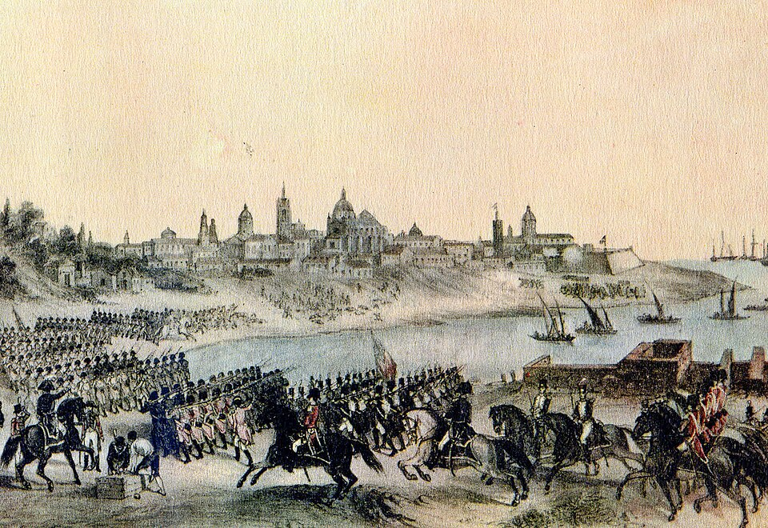

Buenos Aires reconquistada: capitulan los ingleses tras feroz combate en las calles
Las fuerzas de Santiago de Liniers, engrosadas por milicias de vecinos, batieron casa por casa a los ocupantes y obligaron al general Beresford a rendir bandera en la Plaza Mayor. La ciudad, abandonada por su virrey, se salvó a sí misma.

Cuarenta y seis días duró la humillación. La bandera inglesa que flameaba sobre el Fuerte desde fines de junio fue arriada hoy, tras dos jornadas de combate encarnizado en que las calles de esta capital se volvieron trincheras. Las columnas del capitán de navío Santiago de Liniers, cruzadas desde la Banda Oriental bajo el temporal, atacaron desde el Retiro, mientras de cada azotea llovían sobre el invasor balas, piedras y hasta aceite hirviendo: la ciudad entera se batió, y no hay crónica que pueda nombrar a todos sus héroes.
Acorralado en la Plaza Mayor, el general William Carr Beresford presentó la espada al mediodía. Sus mil doscientos veteranos, los mismos que habían tomado la ciudad casi sin resistencia cuando el virrey Sobremonte partió hacia Córdoba con los caudales, marcharon prisioneros entre dos filas de vecinos armados. Dígase con claridad lo que hoy todos murmuran: la ciudad no fue salvada por el virrey ni por tropas del rey, sino por sus propios hijos organizados en milicias.
La ocupación había empezado el 27 de junio con una facilidad que todavía sonroja: mil seiscientos ingleses desembarcados en Quilmes marcharon sobre la capital del virreinato casi sin disparar, mientras el virrey Sobremonte partía hacia Córdoba llevándose el tesoro real, que de poco le sirvió: un destacamento invasor lo alcanzó en Luján, y el oro de estas provincias navega hoy rumbo a Londres. La expedición ni siquiera traía órdenes de Su Majestad británica: fue una aventura del comodoro Popham, urdida por su cuenta tras la toma del Cabo de Buena Esperanza, a la caza de un puerto rico y supuestamente ansioso de cambiar de amo. El cálculo de que los criollos recibirían al inglés como libertador duró lo que tardaron en verlo cobrar la aduana.
La reconquista fue obra de muchas manos: Liniers cruzó desde la Banda Oriental con tropas veteranas y milicianos, el hacendado Pueyrredón, derrotado días atrás en los campos de Perdriel, volvió a la carga con sus jinetes de la campaña, y la ciudad puso el resto. Se peleó de azotea en azotea, y las mujeres tuvieron su parte en la jornada: desde los techos llovió cuanto había, agua hirviendo, tejas, muebles enteros. Cuando la bandera de parlamento asomó sobre el Fuerte, las campanas de todas las iglesias se echaron a vuelo juntas, y en la Plaza Mayor se vio llorar abrazados a hombres que no se conocían. Esta ciudad comerciante, que se creía de tenderos, se descubrió de soldados.
Esa lección no se olvidará fácilmente. Los criollos han descubierto en estas semanas dos cosas que valen un tesoro: que saben pelear, y que pueden gobernarse cuando el poder los abandona. Ya se habla de formar cuerpos permanentes de milicia urbana —hay quien propone nombres como el de Patricios— por si el inglés, que domina los mares, intentara volver. Si vuelve, encontrará una ciudad armada. Y quién sabe si estas armas, el día de mañana, no servirán para algo más que rechazar ingleses.